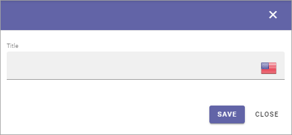

Publishing Channels Categories¶
You can create categories to use with Publishing Channels. Note that it’s mandatory to add each channel to a category, when a new channel is created. If no categories are set up, a new channel is automatically added to the default categpry (General). The default category can be renamed here, if needed.
To work with Publishing Channels Categories, click the cogwheel.

If any categories are set up, they are listed here, for example:

Use the pen to edit a category, the dust bin to delete it. Note that the category “General” is default and can not be deleted, but it can be renamed.
To create a new category, click the plus:

Add a title for the new category and save:
You can add a title in any or several of the tenant languages. Click the flag to change language.